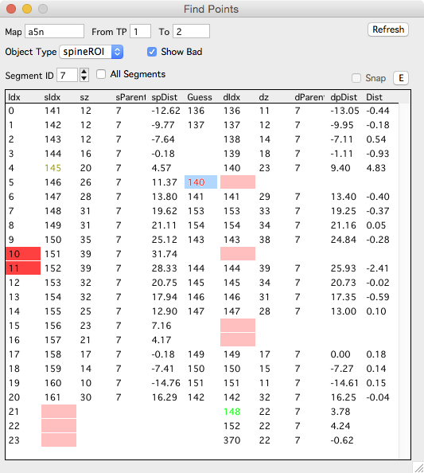
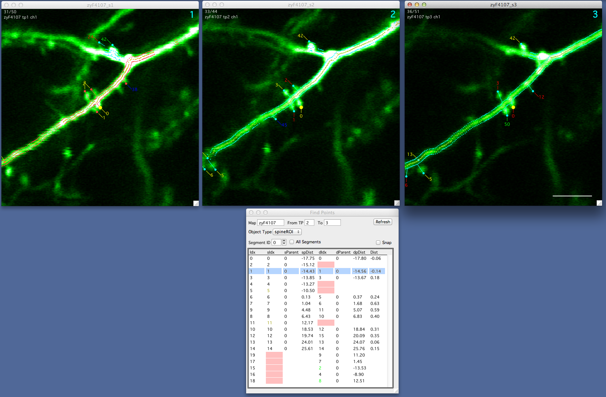

Find Points
The find points panel is used to browse annotations between two timepoints, shows the best-guess for correspondence, and allows annotation correspondence to be edited between timepoints.
To open the find points panel:
- Right-click an annotation in a map plot and select ‘Find Points’.
- Right-click a timepoint in the time-series panel and selecting ‘Find Points’.
Overview
- The find points panel displays a list of all annotations in the source timepoint (smIdx).
- For each annotation in the source timepoint, it shows if it is connected to the destination timepoint (dmIdx). It will color the dmIdx cell red if there is no connection.
- Any remaining annotations in the destination timepoint (annotations not connected to the source timepoint) will be displayed at the bottom of the list.
- Each annotation in the source timepoint (‘smIdx’) will have a best guess (‘mGuess’) connection. For spines, this is using the ‘Segment Pivot’ for the two segments listed in Find Points and will connect spines across timepoints that are within ‘Connect spines within this distance (um)’. See the Map Manager Options Panel to set this.

Interface
- From TP. Source timepoint.
- To. Destination timepoint.
- Object Type. Select the type of objects to display.
- ShowBad. If checked, bad points will be included in the list. Bad points will always have their ‘Idx’ column in red.
- Segment ID. Limit the list to one segment ID.
- All Segments. Generate the list for all segments. If you are connecting spines, leave this off (unchecked).
- Refresh. Refresh the Find Points list.
Column Names
Clicking on a column name will sort the list by the values in that column. Column names starting with ‘s’ are for the source timepoint (from TP), column names starting with ‘d’ are for the destination timepoint (to TP).
- Idx - The row index in the table (no relation to object index).
- sIdx - Source object stack db index.
- sz - Source object z-depth
- sParent - Source object parent segment.
- spDist - Source object distance from pivot.
- Guess - Automatically generated best guess for connection. This uses each objects distance from pivot (spDist and dpDist) and returns objects within X um, where X is specified by ‘Connect spines within this distance (um)’.
- dIdx - Destination object stack db index.
- dz - Destination object z-depth
- dpDist - Destination object distance from pivot.
- Dist - When two points are connected (both sIdx and dIdx are filled in), this is the distance between the two points measured as the distance between their two pivot points (spDist and dpDist).
Interaction
- Bring up a map run by right-clicking a row and selecting ‘Plot Run’.
- Select an object in the list and it will be propagated to all run and map plots.
- Use the keyboard to scroll through the list. The selected point will flash in all open windows.
- Use left/right arrows to flash the selected object again.
Using the keyboard to connect and disconnect objects
For a selected row
- ‘shift + right-arrow’ to commit the ‘Guess’ to the destination (dIdx). This will connect the source and destination objects together, making them persistent.
- ‘del’ key to remove the connection. This will remove persistence between the source and destination objects.
- ‘ctrl + p’ to set the selected point at the global pivot. This is not used for spines.
Tips
When used with a spine run, find points is a reliable way to check the connections between all objects in two timepoints.
All objects in the source timepoint are in the list, followed by any remaining objects in destination timepoint that were not connected to an object in the source timepoints.
By sorting the list with the source distance from pivot (spDist), you can step through all spines in the source timepoint sequentially along the dendritic segment.
By sorting the list with the destination distance from pivot (dpDist), you get a sequential list of all objects in the destination timepoint.

Example usage of find points panel. Here, we have a run of sessions 1/2/3 (top row). We have positioned the Find Points panel below the stack for session 2. By selecting rows (spines) in Find Points we can browse all spines in session 2, visualize their connections to session 3, and finally edit their connections to session 3 (using the keyboard in Find Points Panel).